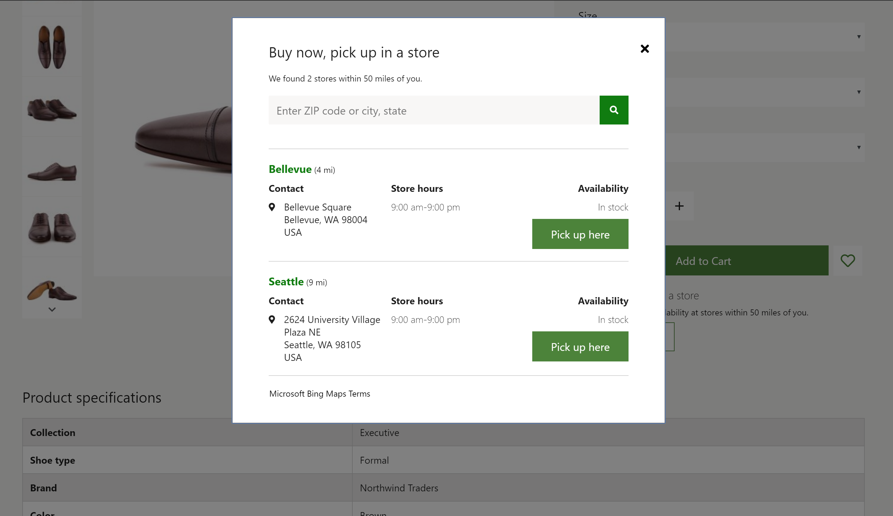
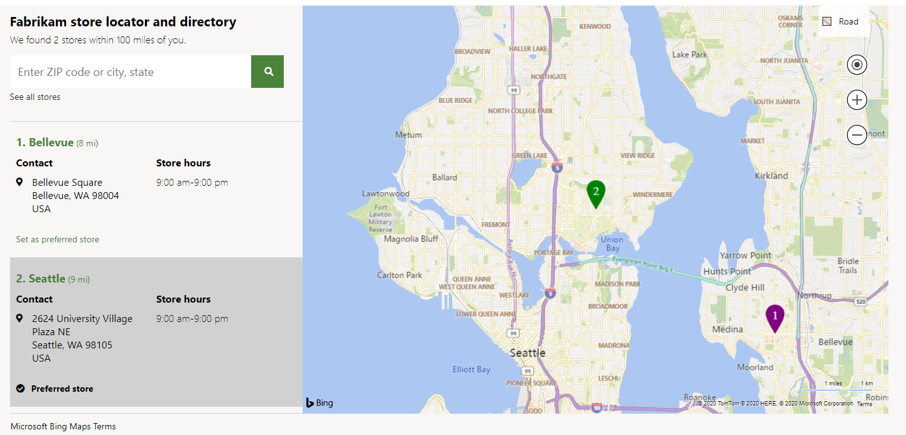

Shopauswahlmodul
Important
Dynamics 365 Retail ist jetzt Dynamics 365 Commerce und bietet umfassende Handelsfunktionen für alle Kanäle – von E-Commerce über Shops bis hin zu Callcentern. Weitere Informationen zu diesen Änderungen finden Sie unter Microsoft Dynamics 365 Commerce.
Dieses Thema enthält das Shopauswahlmodul und es wird beschrieben, wie es Siteseiten in Microsoft Dynamics 365 Commerce hinzugefügt werden.
Übersicht
Kunden können das Filialauswahlmodul verwenden, um ein Produkt in einem ausgewählten Geschäft nach einem Onlinekauf abzuholen. In der Commerce-Version 10.0.13 enthält das Shopauswahlmodul auch zusätzliche Funktionen, mit denen eine Seite Geschäft suchen angezeigt werden kann, die Geschäfte in der Nähe zeigt.
Mit dem Filialauswahlmodul können Benutzer einen Ort (Stadt, Bundesland, Adresse usw.) eingeben, um nach Filialen innerhalb eines Suchradius zu suchen. Beim ersten Öffnen des Moduls wird der Browserstandort des Kunden verwendet, um Geschäfte zu suchen (sofern eine Einwilligung vorliegt).
Speichern Sie die Verwendung des Auswahlmoduls im E-Commerce
- Ein Shopauswahlmodul kann auf einer Produktdetailseite (PDP) verwendet werden, um ein Geschäft zur Abholung auszuwählen.
- Ein Shopauswahlmodul kann auf einer Warenkorbseite verwendet werden, um ein Geschäft zur Abholung auszuwählen.
- Ein Shopauswahlmodul kann auf einer eigenständigen Seite verwendet werden, auf der alle verfügbaren Geschäfte angezeigt werden.
Bing Maps-Integration
Das Filialauswahlmodul ist in die Bing Maps REST-Anwendungsprogrammierschnittstellen (APIs) integriert, um die Geocodierungs- und Vorschlagssuchfunktionen von Bing zu verwenden. Ein Bing Maps-API-Schlüssel ist erforderlich und muss auf der Seite „Freigegebene Parameter“ in Commerce Headquarters hinzugefügt werden. Die Geocodierungs-API wird verwendet, um einen Standort in Breiten- und Längengrade umzuwandeln. Die Integration in die Vorschlagssuche-API wird verwendet, um Suchvorschläge anzuzeigen, wenn Benutzer Standorte in das Suchfeld eingeben.
Für die Vorschlagssuche-REST-API müssen Sie sicherstellen, dass die folgenden URLs gemäß der Inhaltssicherheitsrichtlinie (Content Security Policy, CSP) Ihrer Website zulässig sind (Content Security Policy, CSP). Diese Einstellung erfolgt im Commerce Site Builder, indem zulässige URLs zu verschiedenen Inhaltssicherheitsrichtlinien der Website hinzugefügt werden (z. B. img-src). Weitere Informationen finden Sie unter Inhaltssicherheitsrichtlinie (This is an external link).
- Fügen Sie der connect-src-Richtlinie *.bing.com hinzu.
- Fügen Sie der img-src-Richtlinie *.virtualearth.net hinzu.
- Fügen Sie der script-src-Richtlinie *.bing.com und *.virtualearth.net hinzu.
- Fügen Sie der script style-src-Richtlinie *.bing.com hinzu.
Modus „Im Shop abholen“
Das Filialauswahlmodul unterstützt den Modus Im Shop abholen, der eine Liste der Geschäfte anzeigt, in denen ein Produkt zur Abholung verfügbar ist. Außerdem werden die Öffnungszeiten und der Produktbestand für jedes Geschäft in der Liste angezeigt. Das Shopauswahlmodul benötigt den Kontext eines Produkts, um die Produktverfügbarkeit zu rendern und damit der Benutzer das Produkt zum Warenkorb hinzufügen kann, wenn der Liefermodus des Produkts auf Abholung im ausgewählten Geschäft festgelegt ist. Weitere Informationen finden Sie unter Bestandseinstellungen.
Das Shopauswahlmodul kann einem Kauffeldmodul auf einer PDP-Seite hinzugefügt werden, um Filialen anzuzeigen, in denen ein Produkt zur Abholung verfügbar ist. Es kann auch einem Einkaufswagenmodul hinzugefügt werden. In diesem Fall zeigt das Filialauswahlmodul die Abholoptionen für jeden Positionsartikel im Warenkorb an. Das Shopauswahlmodul kann auch über Erweiterungen und Anpassungen zu anderen Seiten oder Modulen hinzugefügt werden.
Damit dieses Szenario funktioniert, sollten Produkte so konfiguriert werden, dass der Liefermodus Abholung verwendet wird. Andernfalls wird das Modul nicht auf den Produktseiten angezeigt. Einzelheiten zum Konfigurieren des Liefermodus finden Sie unter Lieferarten einrichten.
Das folgende Bild zeigt ein Beispiel eines Speicherauswahlmoduls, das auf einem PDP verwendet wird.

Note
In Version 10.0.16 und höher kann eine neue Funktion aktiviert werden, mit der eine Organisation mehrere Optionen für Abhollieferarten für Kunden definieren kann. Wenn diese Funktion aktiviert ist, werden die Ladenauswahl und andere Module von E-Commerce erweitert, um es den Einkäufern zu ermöglichen, aus möglicherweise mehreren Abhollieferoptionen auszuwählen, sofern diese konfiguriert sind. Weitere Informationen zu dieser Funktion finden Sie in dieser Dokumentation.
Modus „Geschäfte suchen“
Das Filialauswahlmodul unterstützt auch den Modus Geschäfte suchen. In diesem Modus kann eine Geschäftsstandortseite erstellt werden, auf der die verfügbaren Geschäfte und ihre Informationen angezeigt werden. In diesem Modus funktioniert das Shopauswahlmodul ohne Produktkontext und kann als eigenständiges Modul auf jeder Websiteseite verwendet werden. Wenn die relevanten Einstellungen für das Modul aktiviert sind, können Benutzer außerdem ein Geschäft als ihr bevorzugtes Geschäft auswählen. Wenn ein Geschäft als bevorzugtes Geschäft eines Benutzers ausgewählt wird, wird die Geschäfts-ID im Browsercookie beibehalten. Daher muss der Benutzer eine Cookiezustimmungsnachricht akzeptieren.
Die folgende Abbildung zeigt ein Beispiel eines Filialauswahlmoduls, das zusammen mit einem Kartenmodul auf einer Geschäftsstandortseite verwendet wird.

Eine Karte rendern
Das Shopauswahlmodul kann zusammen mit dem Kartenmodul verwendet werden, um die Geschäftsstandorte auf einer Karte anzuzeigen. Weitere Informationen zum Kartenmodul finden Sie unter Kartenmodul.
Eigenschaften des Shopauswahlmoduls
| Eigenschaftenname | Wert | Beschreibung |
|---|---|---|
| Überschrift | Text | Die Überschrift für das Modul. |
| Modus | Geschäfte suchen oder Im Shop abholen | Der Modus Geschäfte suchen zeigt verfügbare Geschäfte an. Im Modus Im Shop abholen können Benutzer ein Geschäft zur Abholung auswählen. |
| Stil | Dialog oder Inline | Das Modul kann entweder inline oder in einem Dialogfeld gerendert werden. |
| Als bevorzugter Shop festlegen | True oder False | Wenn diese Eigenschaft auf True festgelegt ist, können Benutzer einen bevorzugten Shop festlegen. Für diese Funktion müssen Benutzer eine Cookiezustimmungsnachricht akzeptieren. |
| Alle Shops anzeigen | True oder False | Wenn diese Eigenschaft auf True festgelegt ist, können Benutzer die Eigenschaft Suchradius umgehen und alle Geschäfte anzeigen. |
| Vorschlagssuchoptionen: Maximale Ergebnisse | Nummer | Diese Eigenschaft definiert die maximale Anzahl von Vorschlagssuchergebnissen, die über die Bing Vorschlagssuche-API angezeigt werden können. |
| Suchradius | Nummer | Diese Eigenschaft definiert den Suchradius für Geschäfte in Meilen. Wenn kein Wert angegeben wird, wird der Standardsuchradius von 50 Meilen verwendet. |
| Nutzungsbedingungen | URL | Diese Eigenschaft gibt die URL zu den Nutzungsbedingungen an, die für die Verwendung des Bing Maps-Dienstes erforderlich ist. |
Hinzufügen eines Shopauswahlmoduls zu einer Seite
Im Modus Im Shop abholen kann das Modul nur auf PDPs und Warenkorbseiten verwendet werden. Sie müssen den Modus auf Im Shop abholen im Eigenschaftsbereich des Moduls festlegen.
- Informationen zum Hinzufügen eines Shopauswahlmoduls zu einem Kauffeldmodul finden Sie unter Kauffeldmodul.
- Informationen zum Hinzufügen eines Shopauswahlmoduls zu einem Einkaufswagenmodul finden Sie unter Einkaufswagenmodul
Führen Sie die folgenden Schritte aus, um das Filialauswahlmodul so zu konfigurieren, dass verfügbare Filialen für eine Geschäftsstandortseite angezeigt werden, wie in der Abbildung weiter oben in diesem Thema dargestellt.
- Wechseln Sie zu Vorlagen und wählen Sie Neu aus, um eine neue Vorlage zu erstellen.
- Im Dialogfeld Neue Vorlage geben Sie unter Vorlagenname Containervorlage ein und wählen Sie OK.
- Wählen Sie Speichern, wählen Sie Bearbeiten beenden, um die Vorlage einzuchecken, und wählen Sie dann Veröffentlichen, um es zu veröffentlichen.
- Wechseln Sie zu Seiten, und wählen Sie dann Neu aus, um eine neue Seite zu erstellen.
- In dem Dialogfeld Wählen Sie eine Vorlage wählen Sie die Vorlage Marketingvorlage aus. Gehen Sie unter Seitenname Geschäftsstandorte ein, und wählen Sie dann OK aus.
- Auf der neuen Seite wählen Sie Haupt-Slot und wählen dann die Ellipsen (...) und wählen Modul hinzufügen.
- Wählen Sie im Dialogfeld Modul hinzufügen wählen Sie das Modul Container und dann OK aus.
- Wählen Sie im Slot Container die Ellipsen-Schaltfläche (...) und wählen Sie Modul hinzufügen.
- Wählen Sie im Dialogfeld Modul hinzufügen das Modul Container mit zwei Spalten und dann OK aus.
- Legen Sie im Eigenschaftsbereich des Moduls den Breite-Wert auf Container füllen fest.
- Legen Sie den Wert Portspaltenkonfiguration für sehr kleine Ansicht auf 100 % fest.
- Legen Sie den Wert Portspaltenkonfiguration für kleine Ansicht auf 100 % fest.
- Legen Sie den Wert Portspaltenkonfiguration für mittlere Ansicht auf 33 % 67 % fest.
- Legen Sie den Wert Portspaltenkonfiguration für große Ansicht auf 33 % 67 % fest.
- Wählen Sie im Slot Container mit zwei Spalten die Auslassungspunkte (...) und dann Modul hinzufügen aus.
- Wählen Sie im Dialogfeld Modul hinzufügen das Modul Auswahl speichern und dann OK aus.
- Legen Sie im Eigenschaftsbereich des Moduls den Modus-Wert auf Geschäfte suchen fest.
- Legen Sie den Wert Suchradius in Meilen fest.
- Legen Sie andere Eigenschaften wie z. B. Als bevorzugten Shop festlegen, Alle Geschäfte anzeigen und Automatischen Vorschlag aktivieren nach Bedarf fest.
- Wählen Sie im Slot Container mit zwei Spalten die Auslassungspunkte (...) und dann Modul hinzufügen aus.
- Wählen Sie im Dialogfeld Modul hinzufügen das Modul Karte und dann OK aus.
- Legen Sie im Eigenschaftsbereich des Moduls nach Bedarf weitere Eigenschaften fest.
- Wählen Sie Speichern, wählen Sie Bearbeiten beenden, um die Seite einzuchecken, und wählen Sie dann Veröffentlichen, um es zu veröffentlichen.
Zusätzliche Ressourcen
Übersicht über die Modulbibliothek
Schnelleinführung zur Produktdetailseite
Schnelleinführung zum Einkaufskorb und Auscheckvorgang
Bing Maps für Ihr Unternehmen verwalten (This is an external link)